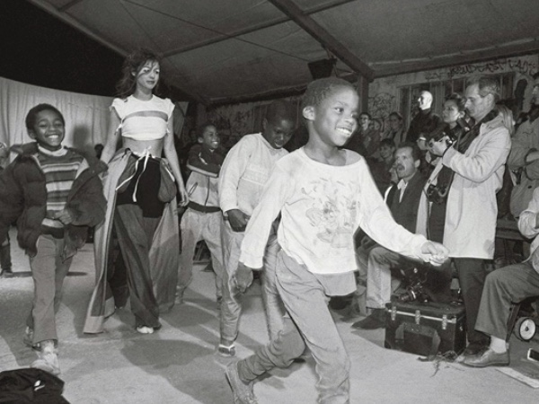
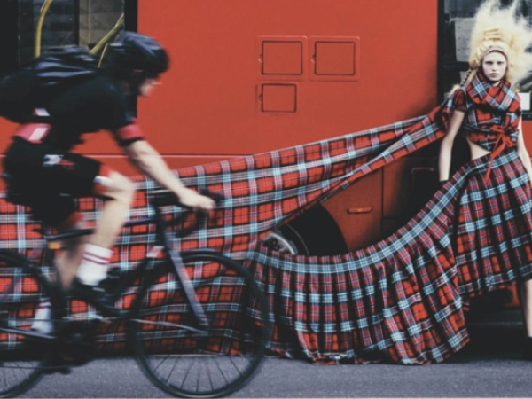
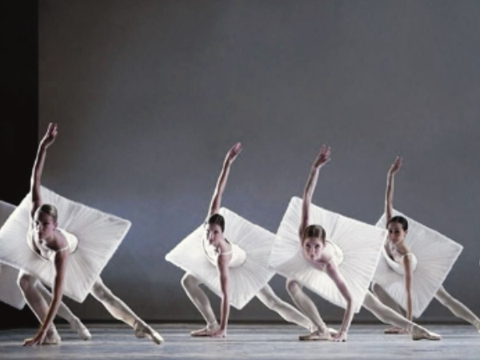
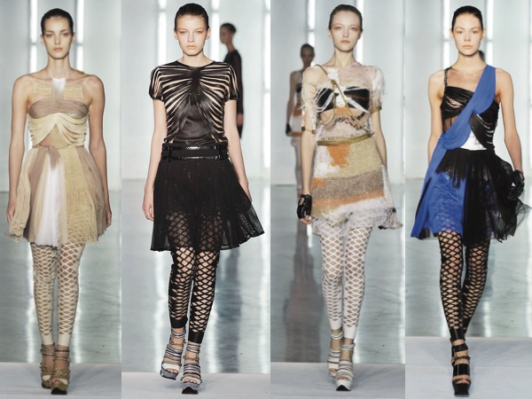
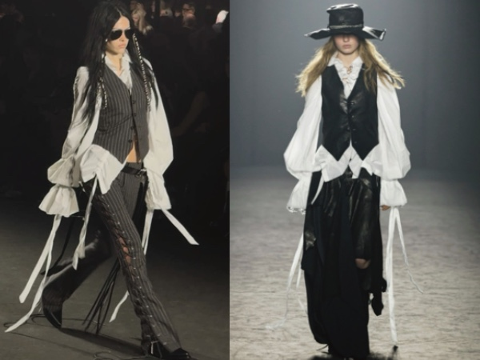
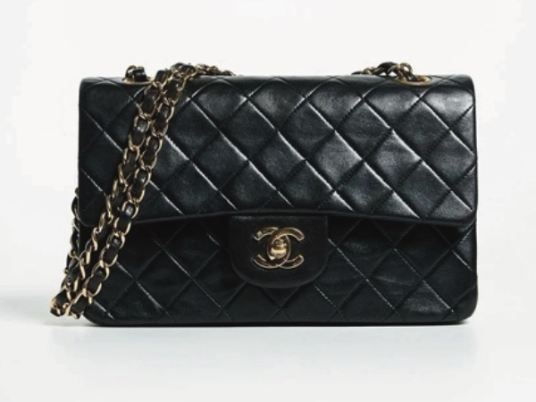
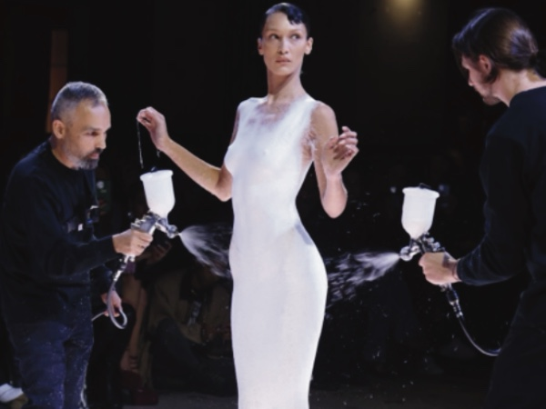
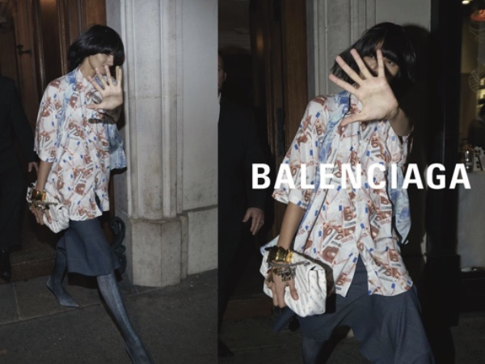

ИССЛЕДОВАНИЯ
архивы, теория, контекст
Ткань и память
Как первая коллекция Martin Margiela (SS 1989), показанная на пустыре, переопределила отношение к «пережиткам прошлого» в моде — драпировке, потертостям и деконструкции.
СКАЧАТЬ PDF →

Атласный бунт
Коллекция Alexander McQueen «Highland Rape»: как акт культурной провокации переосмыслил травматичную историю и запустил карьеру «enfant terrible» британской моды.
СКАЧАТЬ PDF →

Постирония в швах
Почему коллекция Viktor & Rolf «Балет для балерины» высмеяла глянец, но ее владельцы до сих пор не могут продать вещи без скидки.
СКАЧАТЬ PDF →

Дьявол в деталях
Как фильм «Дьявол носит Prada» изменил восприятие индустрии: исследование влияния поп-культуры на реальные fashion-стратегии после 2006 года.
СКАЧАТЬ PDF →
Тлен как тренд
Коллекция Rodarte «Осень-зима 2009»: как руины и деконструкция отразили экономический коллапс, но разорили бренд на несколько сезонов.
СКАЧАТЬ PDF →

Андрогиния вне времени
Как показ Ann Demeulemeester, где модели меняли костюмы на сцене, зафиксировал поворот к постгендерной моде — и почему критики его не заметили.
СКАЧАТЬ PDF →

Стёганый миф
История сумки Chanel 2.55: от революционного дизайна 1955 года до тиражирования в коллекциях «а-ля Margiela», которое сочли святотатством.
СКАЧАТЬ PDF →

Жидкое платье
Как Coperni на показе SS 2023 прямо на модели Белле Хадид распылили из баллончика жидкость, которая застыла в платье прямо на глазах у публики. Шоу облетело мировые СМИ и соцсети, доказав: одно вирусное событие может заменить многомиллионную рекламную кампанию.
ЧИТАТЬ →

Платье-договор
Юридический разбор: как предложение «надеть контракт на подиум» в коллекции Balenciaga изменило подход брендов к коммерческому праву и PR.
СКАЧАТЬ PDF →

Дизайн-антропология
Как телесные импланты и биохакерские трикотажные коллекции стирают грань между одеждой и интерфейсом. Карта новых практик 2025 года.
СКАЧАТЬ PDF →